Jose Vega
Hello, my name is Jose Vega. I was born and raised in Los Angeles and so most of my occupational experience has been in Los Angeles. I have worked for three companies, Subway, Footlocker, Starbucks, and have held a volunteer position as a trainer. Working these positions has not only taught me a lot of the workplace but a lot about myself. I learned most about myself working as a dog trainer and as a Sales Associate for Foot Locker.
I was started working with Foot Locker since I was 16. Since then, I have worked at three different locations. I started off in Los Angeles but when my university career began, I moved to Riverside. There are many reasons as to why I love working with the company other than my undying passion for sneakers. I love working for this company because of the oppurtunities it has to offer. Oppurtunities such as growth with the company, internships, scholarships, and overall personal development. However, working for Foot Locker is not the only thing I am passionate about.
Additionally, I love animals. I love working with dogs and helping them develop into more obedient, disciplined, and intelligent members of a family. I got into this volunteer work way back during June of 2022, two months after I rescued my dog from the shelter. I did not know it then but I had rescued a working breed dog so my hands were extremly full. I struggled for two months in figuring out how exactly I would give this dog the best life it deserves while making my life easier. It took me two months to get the hnag of it but when I did, I knew that this was something I was passionate about. Soon, I started assiting other dog owners in the neighborhood in getting their furry friends to become more 'trained'. I worked primarily with owners of working dog breeds because recently, there has been an increase of these breeds in shelter. My efforts are to prevent these dogs from going back to these shelters or worse.
Experience
Sales Lead
• Consistently led in sales for months at various locations
• Collaborated with management and visualists to surpass marketing expectations
• Currently undergoing process of becoming Assitant Manager
Trainer
• Responsible for educating dogs and owners on behavioral issues and how to resolve them
• Primarily work with working breeds such as Belgian Mallinois, Australian Shepards, etc
Barista
• Performed various tasks such as crafting drinks, engaging with customers, & prepping food
• Responsible for ensuring customer satisfaction
• Recognized for efforts that led to surpassing weekly and monthly quotas
Education
UC Riverside
Portfolio
 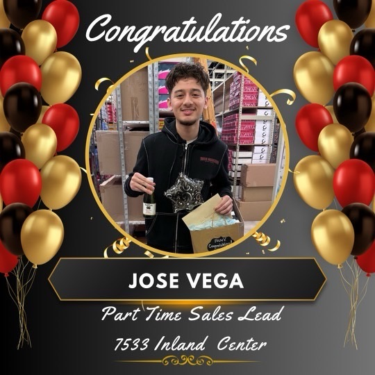
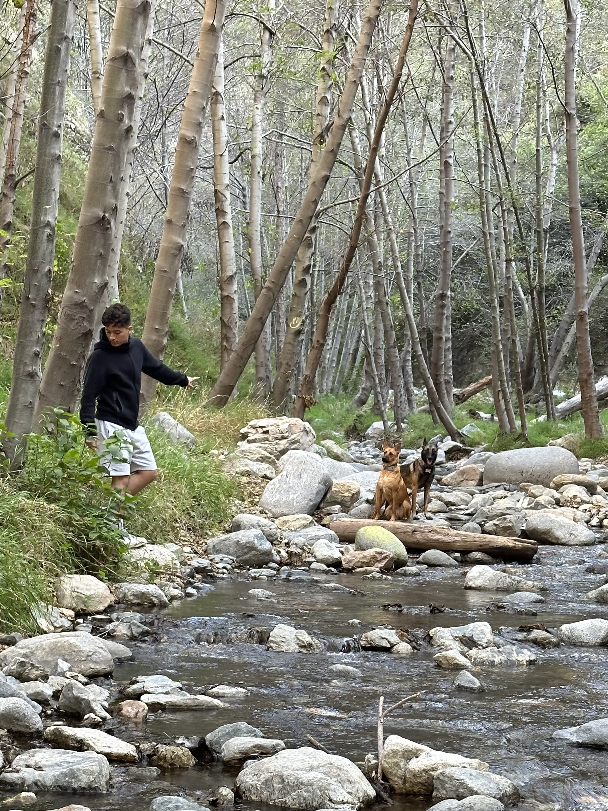
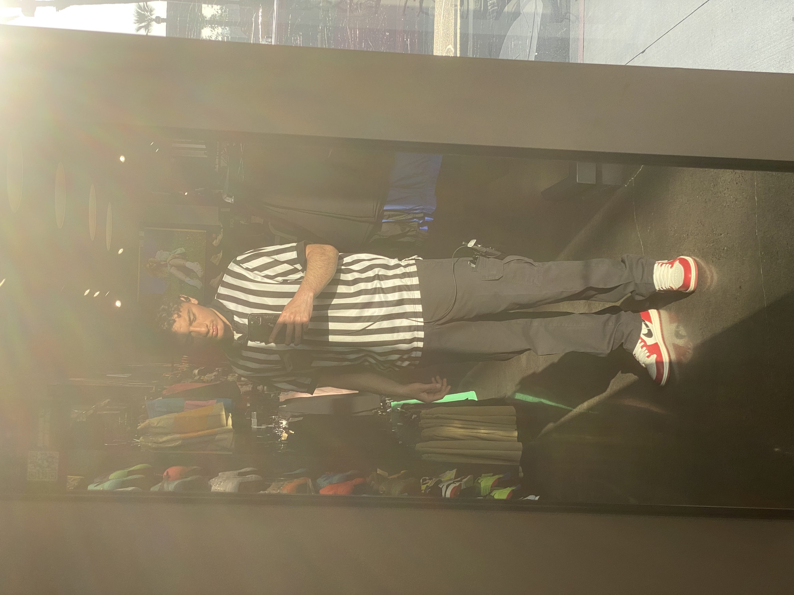
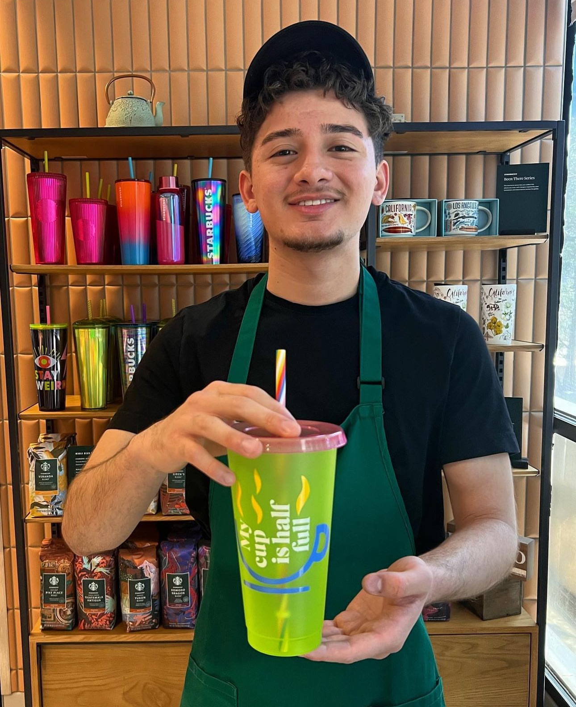
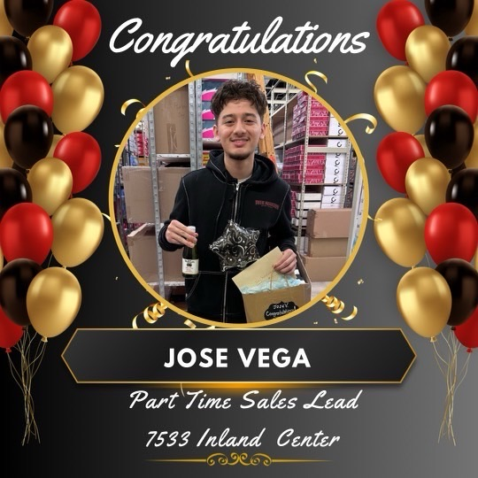
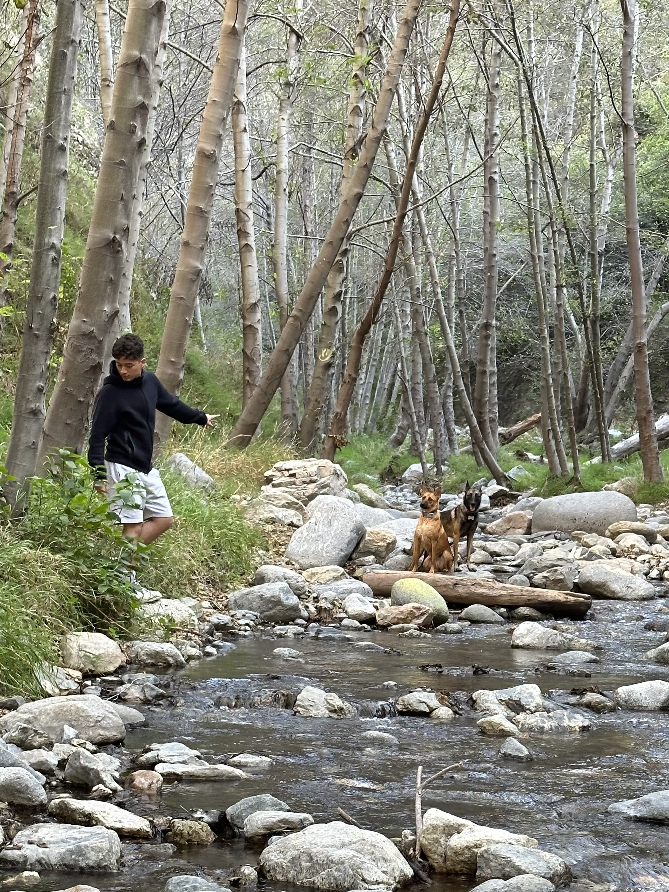
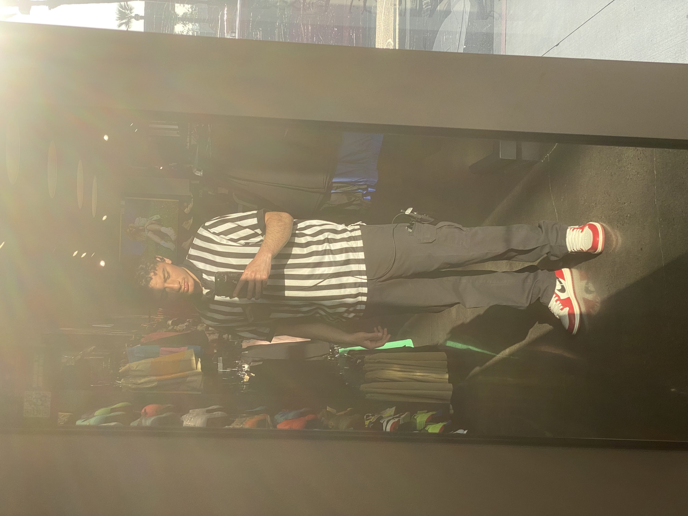
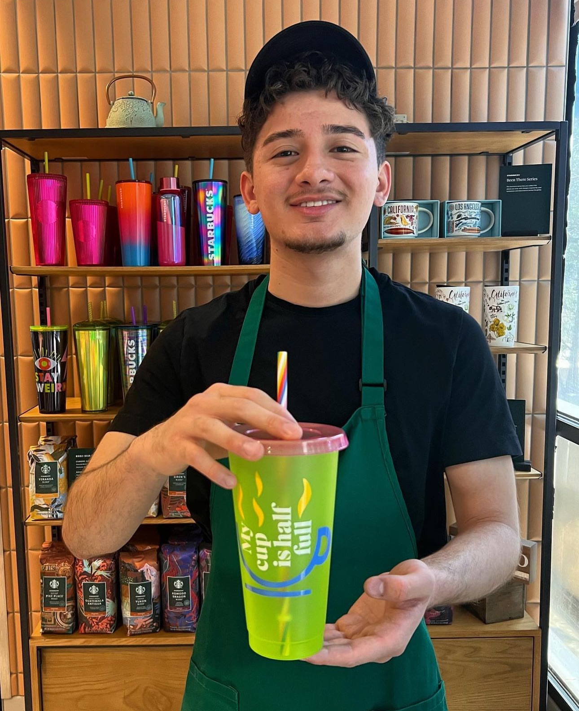
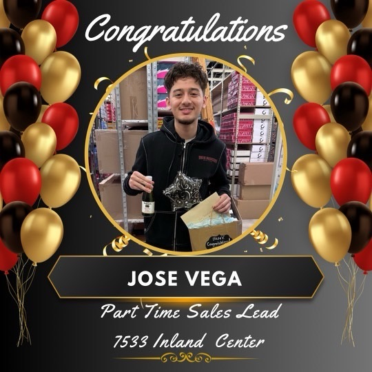
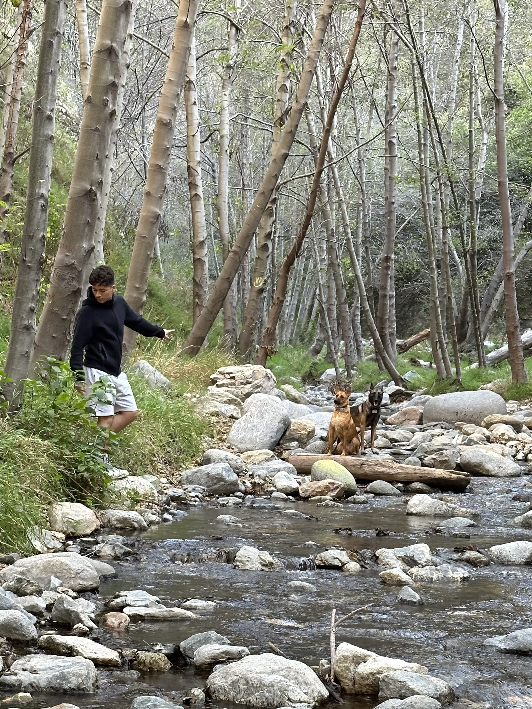
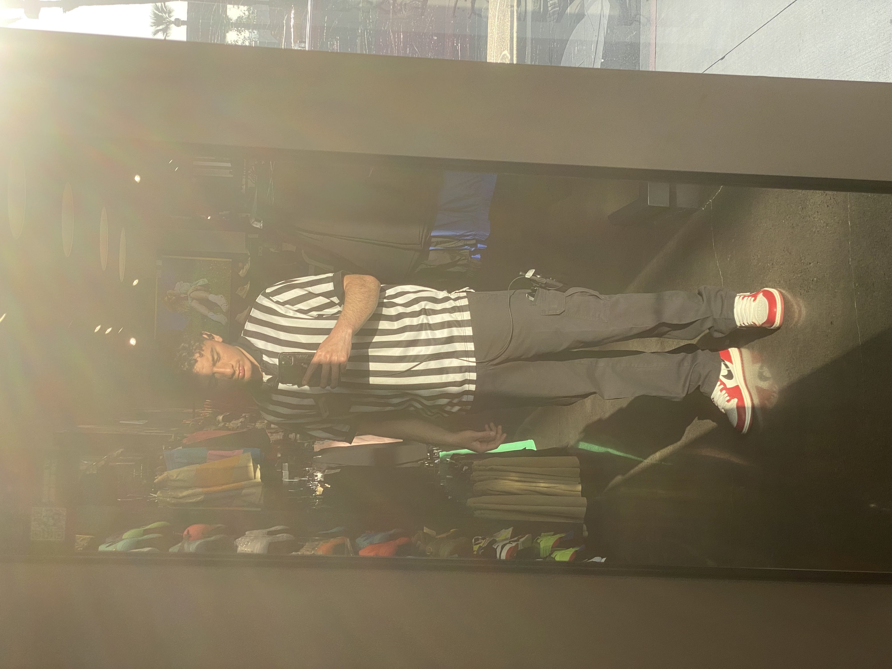
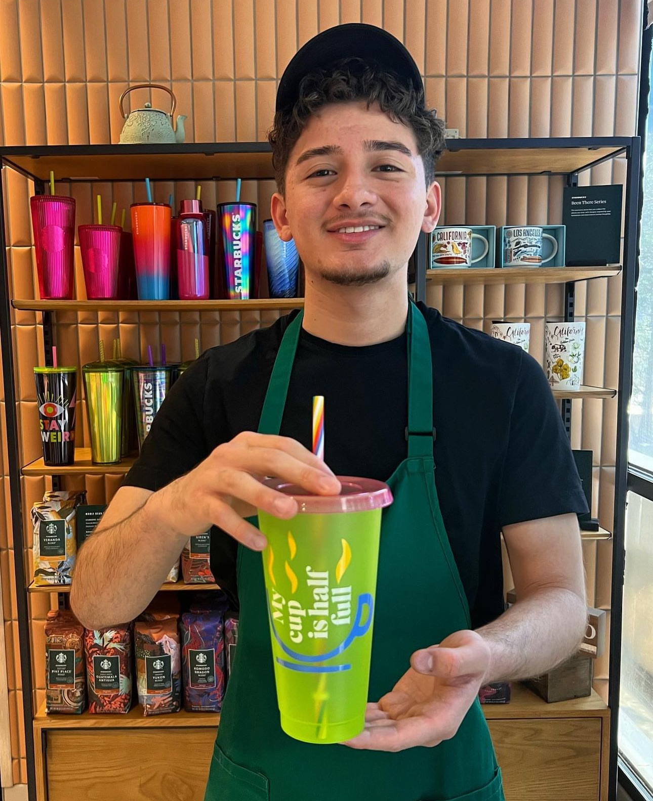